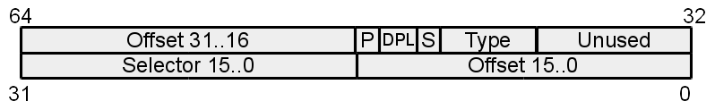

System Interface
CS422/522 Lecture 5
10 September 2014
Last updated: 10 September 2014
Recap
- Page table performance
- Xv6 memory initialization
- Page faults
- Page strategies
Processes
- Program in execution
- Runs in userspace
- Has own view of memory
- Uses OS as a library / service to underlying hardware
Today -- OS System Call Abstraction and OS Hardware Interface
Transitions
Types:
Motivation:
- user to kernel - interrupts, exceptions, traps
- kernel to user - return from interrupts, exceptions, traps
- kernel to kernel - context switch, interrupts
Motivation:
- Isolation
- Abstraction / transparency
- Events / notifications

Exceptions and Interrupts
- Control transfer from normal flow to handle special events
- Exceptions errors or exceptional conditions
- Processor detected: faults, traps, aborts
- Software interrupts
- Interrupts asynchronous external event
- Maskable
- Nonmaskable
System calls
Userspace accesses service offered by OS.Categories:
- Process control
- File management
- Device management
- Information
- Communication
- [Protection]
CPU and Transitions
The state before, during, and after.- What should stay the same / be different?
- Faults -- everything remains the same
- Traps -- almost everything, increment eip and return value
- What happens during?
- Process request
- If valid, return result
- If invalid, kill process or crash kernel
X86 Exceptions and Interrupts
- Stored in interrupt descriptor table, IDT
- Descriptor format:
 - Three types:
- Task - Segmentation based management of processes
- Interrupt - mask (hardware) interrupts
- Trap - don't mask interrupts
Exceptions
Examples:- Breakpoint
- General Protection Fault
- Page Fault
- Double Fault -- kernel bug
- Triple Fault -- kernel bug
Interrupts
- Keyboard
- Hard drive
- Mouse
- Network card
- Spurious -- there was an interrupt, it has since left
- System timer
Interrupt Table
- 256 descriptor entries
- Some are already occupied by exceptions
- OS will maps hardware interrupts (IRQS) to others
- We can occupy one or more for system calls
System Calls
- Goal: Increase CPU privilege level and execute OS service
- x86 method - assembly instruction int x
- When setting the descriptor, the x's descriptor's dpl == 3
- cpl > dpl, general protection fault
- Passing parameters: stack or registers
Task State Segment
- Hardware support for process management
- Slower than software so largely deprecated / unused
- Except: holds kernel (CPL = 0) stack
System call overview
- Pass parameters, execute int SYSCALL
- CPU swaps stacks based upon TSS
- Pushes ss, esp, eflags, cs, eip, error code (optional)
- May store rest of the cpu state (depends on system call model / compiler)
- Execute system call
- Set return result, where? register -- eax
- Restore registers
- execute iret
Setting up the IDT
- Handlers
- Building IDT entries
- Setting the IDT
Handlers
Make produces a vector.S file from vectors.pl:
2981 # .globl vector0
2982 # vector0:
2983 # pushl $0 # error
2984 # pushl $0 # trap number
2985 # jmp alltraps
Pointers to handlers
2988 # # vector table
2989 # .data
2990 # .globl vectors
2991 # vectors:
2992 # .long vector0
2993 # .long vector1
2994 # .long vector2
2995 # ...
Creating the IDT
Called from int main...
3071 for(i = 0; i < 256; i++)
3072 SETGATE(idt[i], 0, SEG_KCODE<<3, vectors[i], 0);
3073 SETGATE(idt[T_SYSCALL], 1, SEG_KCODE<<3,
vectors[T_SYSCALL], DPL_USER);
Setting the IDT
3081 lidt(idt, sizeof(idt));
An Example Using SBRK
- sbrk allocates and frees memory for a process
- User doesn't typically call, instead uses: malloc and free
- sbrk(int increment)
- increment > 0 -- allocate more memory
- increment == 0 -- determine upper memory boundary
- increment < 0 -- free memory
- In xv6 only > 0 is supported
Calling SBRK
new_va = sbrk(1000);
Entering the Kernel
Enters usys.S and a function like:
.globl sbrk
sbrk:
movl $SYS_SBRK, %eax
int $T_SYSCALL
ret
Entering the Trap Handler
.globl vector64
vector64:
pushl $0 # error
pushl $64 # trap number
jmp alltraps
Initial Trap Handling
3003 .globl alltraps
3004 alltraps:
3005 # Build trap frame.
3006 pushl %ds
3007 pushl %es
3008 pushl %fs
3009 pushl %gs
3010 pushal
3011
3012 # Set up data and per−cpu segments.
3013 movw $(SEG_KDATA<<3), %ax
3014 movw %ax, %ds
3015 movw %ax, %es
3016 movw $(SEG_KCPU<<3), %ax
3017 movw %ax, %fs
3018 movw %ax, %gs
Entering the C Trap Handler
3020 # Call trap(tf), where tf=%esp
3021 pushl %esp
3022 call trap
The C Trap Handler
3101 trap(struct trapframe *tf)
3102 {
3103 if(tf−>trapno == T_SYSCALL){
3104 if(proc−>killed)
3105 exit();
3106 proc−>tf = tf;
3107 syscall();
3108 if(proc−>killed)
3109 exit();
3110 return;
3111 }
...
System Call Handler
3375 syscall(void)
3376 {
3377 int num;
3378
3379 num = proc−>tf−>eax;
3380 if(num > 0 && num < NELEM(syscalls) && syscalls[num]) {
3381 proc−>tf−>eax = syscalls[num]();
3382 } else {
3383 cprintf("%d %s: unknown sys call %d\n",
3384 proc−>pid, proc−>name, num);
3385 proc−>tf−>eax = −1;
3386 }
3387 }
Defining sys_sbrk
3344 extern int sys_sbrk(void);
...
3350 static int (*syscalls[])(void) = {
...
3362 [SYS_sbrk] sys_sbrk,
...
Executing the system call
3451 sys_sbrk(void)
3452 {
3453 int addr;
3454 int n;
3455
3456 if(argint(0, &n) < 0)
3457 return −1;
3458 addr = proc−>sz;
3459 if(growproc(n) < 0)
3460 return −1;
3461 return addr;
3462 }
growproc
- Wrapper around growproc
- growproc actually supports increasing or decreasing memory
- growproc wraps allocuvm / deallocuvm
- allocuvm / deallocuvm wrap kalloc / kfree with proper va to pa mappings
Return to User
3381 proc−>tf−>eax = syscalls[num]();
...
3023 addl $4, %esp
3024
3025 # Return falls through to trapret...
3026 .globl trapret
3027 trapret:
3028 popal
3029 popl %gs
3030 popl %fs
3031 popl %es
3032 popl %ds
3033 addl $0x8, %esp # trapno and errcode
3034 iret
Calling SBRK
new_va = sbrk(1000);
// new_va should be + 1000 bytes from beyond the previous limit
Hardware Interrupts
- Notification of an event from hardware
- EFLAGS-IF -- set = enabled, unset = disabled
- Example system timer:
- Set to tick off at some fixed time interval -- 10 ms
- Every 10 ms, interrupt generated
- In kernel -- IF = 0
- In user -- IF = 1
- When triggered, causes trap
- Trap handler causes switching to a new process
- Continue execution of resumed process
Hardware Interrupts Interface
- CPU delegates to APIC (advanced programmable interface
- Upto 15 different entries
- Connect directly to CPU trap numbers
- Mapping setup by calls to APIC
- After each hardware interrupt, must reset state:
send an EOI (end of interrupt) or no more interrupts
Alternatives to Hardware Interrupts
- Consider events versus polling
- Interrupts would be events
- Could we implement all hardware interrupts as polling?
Hard to enforce time sharing: A good process might yield, but a malicious process might never yield - Performance: each poll attempt requires a user to kernel, kernel to user transition
Office Hours Change
After today, Wednesday's office hour cancelled. New office hour Tuesday 1-2 PMPresentation Days
- During the semester between 3 to 5 days of paper presentations
- Bad grade begone
- List of papers forthcoming
- Student presenting does not need to send review
- May be (should be) presented in the Tuesday seminars for bonus bad grade begone
Lab 0, Lab 1, Lab 2
- Lab 0 and Lab 1 due tonight before 11:59 PM for credit
- Lab 2 must due tomorrow before 11:59 PM for full credit
- Lab 2 has 3 late days, each reduces final score by 10%
Lab 3A: User Environments
- Due: 9/18 @ 11:59 PM
- Building environments (processes)
- Implementing a trap handler
Next Time
Monday 1:00PMProcesses